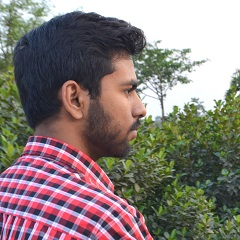

<!-- About me section starts here -->
<div class="container" id="about-me-section">
	<div class="row">

		<!-- Top left section starts here -->
		<div class="col-md-6" id="profile-section">
			<br><br><br><br>

			<!-- Profile picture section -->
			<div class="col-md-4 offset-md-4" id="profile-pic">
				
			</div>
			<!-- profile picture section ends here -->
		</div>
		<!-- Top left section ends here -->

		<!-- Right section starts here -->
		<div class="col-md-6" id="right-section">
			<!-- Name heading section starts here -->
			<div class="row" id="heading-name">
				<div class="col-md-12">
					<p>Susanta Biswas</p>
				</div>
			</div>
			<!-- Name heading section ends here -->

			<!-- Right side Content section starts here -->
			<div class="row" id="bio-section">
				<!-- Bio starts here -->
				<div class="container">
					<p>
						I am currently working as an Associate-Projects at Cognizant, designing and developing solutions for various E-commerce
						problems. I have developed smart chatbot solutions using <span id="custom">IBM Watson AI</span>.
						I received my Bachelor's degree in Computer Science and Engineering from <span id="custom">National Institute of
							Technology Durgapur</span>, where
						I worked in <span id="custom">Computational Geometry</span> and found a deterministic polynomial time algorithm
						for biochromatic line segments cover
						problem. During my B.Tech, I undertook Research internship at <span id="custom">Complex Networks Research Group</span>
						of <span id="custom">Indian Institute of Technology
							Kharagpur</span>, working
						on Language Models for word prediction.
					</p>
					<p>
						I am broadly interested in <span id="custom">Machine Learning, Computer Vision, Sequence Models</span> and their
						applications. I love exploring and learning about new interesting things that excite me.
						I have experience with Web Technologies like <span id="custom">Angular, React, Node.js</span> etc. I'm interested
						in solving machine learning problems which can help solve real world problems.
					</p>
					<p>
						I like participating in competitive machine learning challenges. In my free time I enjoy reading manga and
						watching anime.
					</p>
				</div>
				<!-- Bio ends here -->

				<!-- Download CV button starts here-->
				<div class="container">
					<div class="row" id="bio-footer">
						<div class="col-md-6">
							<a href="https://github.com/susantabiswas/resume/raw/master/Double%20page/SusantaBiswas_resume.pdf" class="btn btn-dark btn-lg" target="_blank"
							 rel="noopener noreferrer">
								Download Resume
							</a>

						</div>
					</div>
				</div>
				<!-- Download CV button ends here -->

				<br><br><br>

				<!-- Social media icon starts here -->
				<div class="container">
					<div class="row" id="social-links">
						<div class="col-md-12 offset-col-4">
							<ul id="social-icons">
								<li>
									<a href="https://github.com/susantabiswas">
										<fa-icon [icon]="['fab', 'github']" size="3x" id="github"></fa-icon>
									</a>
								</li>
								<li>
									<a href="https://www.linkedin.com/in/susantab/">
										<fa-icon [icon]="['fab', 'linkedin']" size="3x" id="linkedin"></fa-icon>
									</a>
								</li>
								<li>
									<a href="https://www.quora.com/profile/Susanta-Biswas-9">
										<fa-icon [icon]="['fab', 'quora']" size="3x" id="quora"></fa-icon>
									</a>
								</li>
							</ul>
						</div>
					</div>
				</div>
				<!--Social media icon ends here -->
			</div>
			<!-- Right side section ends here -->
		</div>
		<!-- Right section ends here -->
	</div>

</div>

<!-- About me section ends here -->